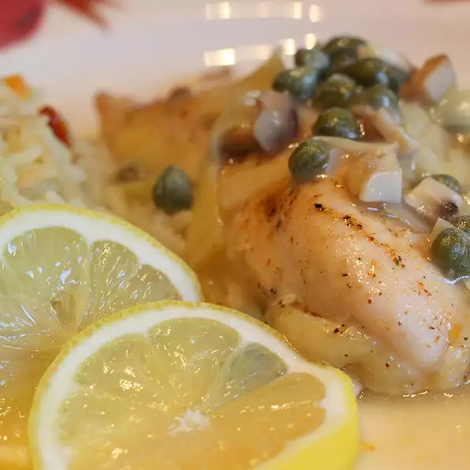

Chicken Piccata

Description
Delicious piccata that isn't as greasy
as the typical recipe. You will love this new variation
of an old favorite. Stun your friends and family
with your new-found cooking ability as they masticate their way to
gustatory nirvana.
Ingredients
- 3/4 cup all-purpose flour
- 1/8 teaspoon garlic powder
- 1/4 teaspoon salt
- 1/8 teaspoon black pepper
- 1/2 teaspoon Italian seasoning
- 4 skinless, boneless chicken breast halves,
pounded 1/2 inch thick and cut into thirds
- 2 tablespoons olive oil
- 1 clove garlic, minced
- 1 onion, minced
- 1/2 cup white wine
- 1 (14.5 ounce) can chicken broth
- 2 tablespoons lemon juice
- 1 (13.5 ounce) can artichoke hearts, drained
and chopped, liquid reserved
- 1/4 cup capers, with liquid
- 2 tablespoons butter